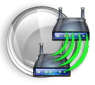

Wireless FeaturesCenturyLink provides a wide variety of features in CenturyLink High-Speed Internet Routers. The table below provides a brief explanation of the features found under the Wireless Setup tab.
Wireless Setup
| Feature | Definition | Basic Settings | Basic Settings provides a fast and easy way to change the primary network name (SSID) and enable/disable the wireless radio. If the wireless security type is changed using another page for the primary SSID, the set wireless security type will always be shown on the basic settings page. | Wireless Security | Wireless Security allows you to configure a unique Wireless Equivalent Privacy (WEP) or Wi-Fi Protected Access (WPA and WPA2) security key/pass phrase. Wireless security can also be turned off on the page. | Radio Setup | Radio Setup allows you the change the wireless mode, channel, and power levers of the wireless radio. | SSID Setup | SSID Setup allows you to enable additional SSID's for you wireless network and configure them for unique subnets or defined start URL's. | MAC Authentication | Wireless MAC Authentication limits wireless network access to devices by MAC addresses. For a device to access a network with wireless MAC authentication the MAC address of the device must be entered into the wireless router. | WPS | Wi-Fi Protected Setup (WPS) provides easy and secure connections to wireless networks. When initiated in the router and end device, the network security settings will be shared. | WMM | Wireless Multimedia (WMM) provides Quality of Service (QoS) on the wireless network by prioritizing traffic by traffic type. |
|---|---|---|
| WDS | Wireless Distribution System (WDS) allows the wireless interconnection of access points on your wireless network extending the wireless range of the network. WDS devices are added on the WDS page. | |
|  | Wireless Schedule | Wireless Access Scheduler allows you to define enable and disable times for your wireless radio. | 802.11x | 802.11x combines the security features of WEP with 802.1x authentication |